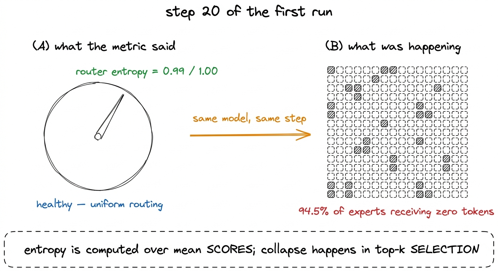
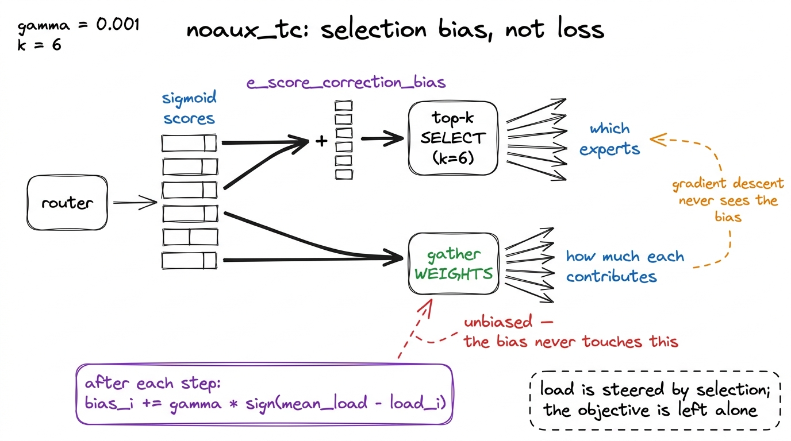
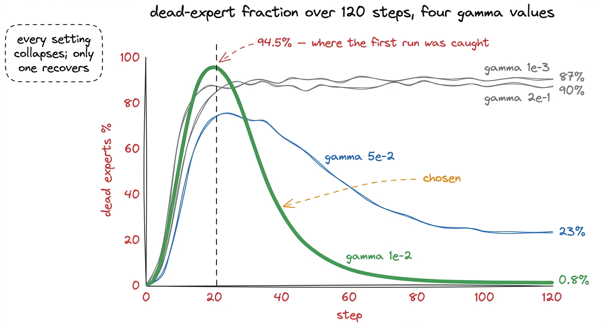
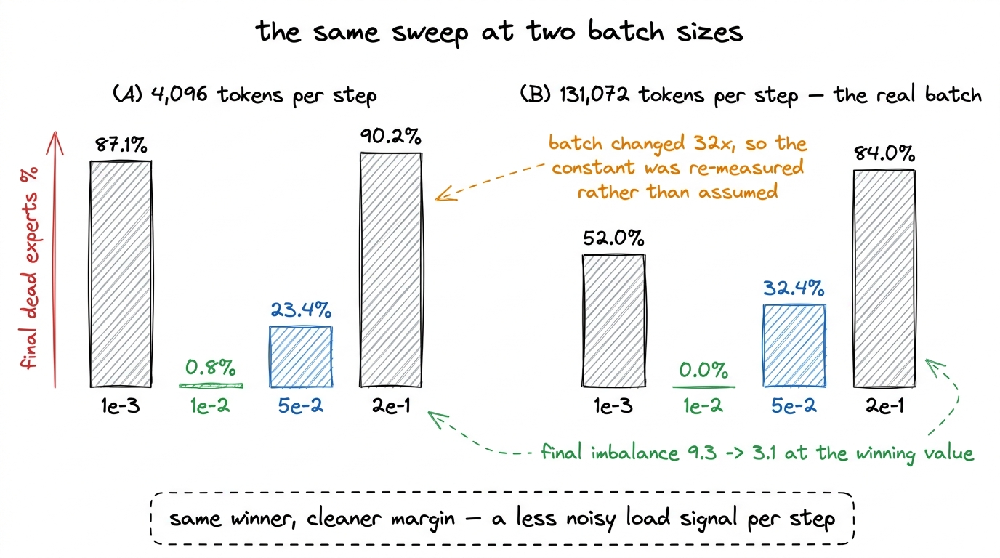
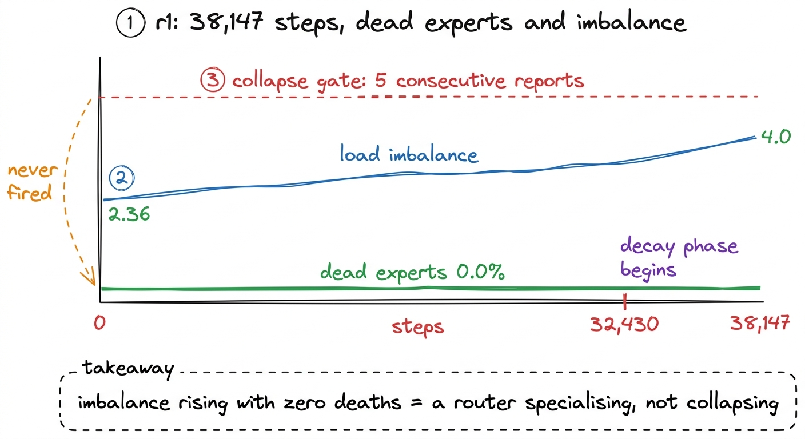

Expert collapse, and the metric that missed it
Twenty steps in, 94.5% of experts were receiving no tokens while router entropy read 0.99 out of 1.0. Why entropy passes a collapsing run, and the four-value sweep that fixed it.
A mixture-of-experts layer holds many small feed-forward networks and sends each token to a few of them. Ours holds 256 and sends each token to 6. That arrangement is what lets a 1.02-billion-parameter model cost only 145 million parameters of compute per token, and it comes with a failure mode that has no equivalent in a dense model: the router can decide it likes a handful of experts and stop using the rest.
Twenty steps into the first real training run, 94.5% of our experts were receiving zero tokens.
What makes this worth a chapter is not that it happened. Every mixture-of-experts model does this early in training, and the literature says so. What makes it worth a chapter is that the metric we had chosen in advance to detect exactly this condition was reading 0.99 out of 1.0 while it happened, and would have let the run continue to completion.

figure rendering · The monitoring metric and the model's actual state, at the same momentWhy entropy misses it
The router produces a score for every expert for every token, and our chosen health metric was the entropy of those scores. Entropy is high when a distribution is spread out and low when it concentrates, so low entropy should mean the router has picked favourites. The reasoning is sound, and the implementation was correct.
The problem is which distribution gets measured. Entropy was computed over the mean routing scores across the batch, and those means stay close to uniform even when routing has collapsed completely. Selection is top-k, and top-k does not care about the size of a gap. If expert 7 scores 0.51 and expert 118 scores 0.49 for every token in the batch, the mean scores are nearly identical, the entropy over them is nearly maximal, and expert 118 never gets selected once.
That is the whole mechanism. A tiny, consistent score difference wins every time, and averaging hides it because averaging is precisely the operation that removes the per-token detail selection depends on.
The fix at the monitoring level is to stop measuring the scores and start measuring the outcome. Dead-expert fraction — the share of experts that received no tokens this step — is computed after routing, is invariant to how the router arrived at its decision, and cannot be satisfied by a distribution that looks uniform on average.
# what we were measuring
entropy = -(mean_scores * mean_scores.log()).sum() # 0.9999 during collapse
# what we should have been measuring
dead_frac = (expert_load == 0).float().mean() # 0.945 during collapse
imbalance = expert_load.max() / expert_load.mean() # how lopsided the survivors areBoth of the lower two quantities went into the training loop's telemetry, and both are reported every ten steps for the rest of this book.1 expert_load is a per-expert token counter accumulated inside the gate during the forward pass. Under activation checkpointing it is incremented twice per step, once in the forward and once in the recompute, so the counters double. Every consumer of them is scale-invariant — sign(mean - load), load.max()/load.mean(), (load == 0).mean() — so the doubling changes nothing, but it is the kind of thing that produces a confusing graph if you forget it.
The balancer K3 inherits
K3's configuration names its balancing method in one field: topk_method: noaux_tc. The noaux is the interesting part. It stands for "no auxiliary loss", and it describes an approach K3 inherits from DeepSeek-V3 that balances expert load without adding a term to the loss function at all.
The conventional approach adds an auxiliary loss that penalises imbalanced routing, then weights it against the language-modelling loss with a coefficient. That coefficient is a genuine tension: too small and the router collapses, too large and the router is pushed to spread tokens evenly whether or not spreading them helps prediction. The model is being asked to optimise two objectives that disagree.
The aux-loss-free approach removes the tension by moving the intervention out of the loss entirely. Each expert carries a scalar bias that is added to its score for selection purposes only:
scores = router(x).sigmoid() # [tokens, n_experts]
topk = (scores + e_score_correction_bias).topk(k, dim=-1).indices
weights = scores.gather(-1, topk) # note: the ORIGINAL scores, unbiasedThe bias decides which experts are chosen. The weight applied to a chosen expert's output is read from the original, unbiased score. So the bias can move load around freely without ever changing the magnitude of any expert's contribution, and gradient descent never sees it.
After each step, every bias moves one small increment in the direction that evens out the load:
bias_i += gamma * sign(mean_load - load_i)An expert that received fewer tokens than average becomes slightly easier to select. An expert that received more becomes slightly harder. The update uses only the sign of the difference, not its magnitude, so a wildly overloaded expert and a mildly overloaded one are pushed back by the same amount per step.

figure rendering · The aux-loss-free balancer. The bias changes which experts are chosenThere is one more design decision hidden in that code, and it caused a crash later in the project when the model was sharded across GPUs: the bias must be held out of the optimizer. It is not a learned parameter. AdamW would apply weight decay and momentum to a quantity whose entire update rule is already specified, and the two rules would fight. In our implementation it is excluded from the parameter groups, and when we later moved to sharded training it also had to be excluded from sharding, so that every rank computes routing identically by construction.2 On the flagship this was not optional. Leaving the bias in the sharded parameter set produced aten::add_.Tensor got mixed torch.Tensor and DTensor, which is at least a loud failure. The quieter version of the same problem is covered in the chapter on distributed bugs: if each rank computes the balancer update from its own local expert load rather than the global load, the biases diverge and the same token routes to different experts depending on which GPU happens to hold it.
One detail of the released code is worth stating before we go further, because it explains why any of this had to be written at all. e_score_correction_bias exists in Moonshot's released modeling code as a tensor, and it is never initialised and never updated. The field is declared, the config names noaux_tc as the routing method, and no code anywhere in the release moves the value. The balancer described in this chapter is not a reimplementation of something that shipped; it is the thing the released config refers to and the released code does not contain. That is one of four separate reasons the released code cannot train, and the chapter before this one covers the other three.
Choosing gamma by measuring it
DeepSeek-V3 uses gamma = 0.001. The obvious move is to use the same number, and the obvious move is wrong, for a reason that generalises well beyond this parameter.
The bias update is applied once per step, and its size relative to the score distribution determines how fast load can move. But the load it responds to is measured over one step's worth of tokens. DeepSeek balances over millions of tokens per step. Our first measurements balanced over 4,096. The same constant means something different when the signal it reacts to is three orders of magnitude noisier.
So we measured it. Four values, 120 steps each, on the real architecture:
| gamma | worst dead | final dead | final imbalance | final loss |
|---|---|---|---|---|
| 1e-3 (DeepSeek-V3's value) | 97.3% | 87.1% | 42.8 | 7.815 |
| 1e-2 (chosen) | 81.6% | 0.8% | 9.3 | 7.824 |
| 5e-2 | 75.8% | 23.4% | 21.6 | 7.940 |
| 2e-1 | 90.2% | 90.2% | 41.2 | 8.002 |
Three things in that table are worth extracting.
Every setting collapses early. The "worst dead" column ranges from 75.8% to 97.3%, and the best-performing value is not the one with the lowest peak. Collapse in the first tens of steps is not a symptom of a bad balancer; it is what an untrained router does. The question a gate must ask is not whether experts died but whether they came back.
The response is not monotonic. Going from 1e-3 to 1e-2 fixes the problem, and going further to 2e-1 makes it as bad as it was at 1e-3. The reason is visible in the update rule: it uses sign, so a step of 0.2 moves a bias by 0.2 regardless of how far off the load actually is. Once the step is larger than the score gaps it is trying to close, the same experts flip from overloaded to underloaded and back on every iteration, and the bias oscillates instead of converging.
Final loss is unchanged. Across a two-hundred-fold range of gamma, final loss moves from 7.815 to 8.002, and the chosen setting is within 0.01 of the worst-balancing one. Balancing is free. It is not trading language-modelling quality for load distribution, which is exactly the property the aux-loss-free design is supposed to have, and it is pleasant to see it hold in a measurement rather than in an argument.

figure rendering · The four sweeps. The peak is not the signal; the recovery is.Re-measuring when the batch changed
The sweep above ran at 4,096 tokens per step. The actual run trains at 131,072 tokens per step, a factor of 32.
Having just written down that DeepSeek's constant was wrong for us because their batch differs from ours, it would have been difficult to justify carrying our own constant across a 32-fold change in the same quantity. So the sweep was repeated at the real batch size:
| gamma | worst dead | final dead | final imbalance | final loss |
|---|---|---|---|---|
| 1e-3 | 95.3% | 52.0% | 42.8 | 7.082 |
| 1e-2 | 68.8% | 0.0% | 3.1 | 7.122 |
| 5e-2 | 78.5% | 32.4% | 33.5 | 7.162 |
| 2e-1 | 93.0% | 84.0% | 33.5 | 7.487 |
The same value wins, and it wins more cleanly: final dead fraction 0.0% against 0.8%, and final imbalance 3.1 against 9.3. The larger batch gives the balancer a less noisy load signal to react to, so the same step size lands better.

figure rendering · The gamma sweep repeated at the batch size the run actually used. TheThe collapse-then-recover shape is confirmed at the real batch as well, and that confirmation went straight into the monitoring design. A gate that declares expert collapse from a single observation would fire on every healthy run in this project during its first thirty steps.3 This nearly caused real damage. When the watchdog gained the ability to actually stop a run, EXPERT_COLLAPSE was still a single-snapshot check, and a healthy trajectory that passes through 69-95% dead in its first tens of steps would have been cancelled automatically. The gate now requires five consecutive reports above the threshold.
What it looked like in the run that finished
r1 trained for 38,147 steps with gamma = 1e-2 and the dead-expert gate armed. The relevant telemetry, from the run's own history:
- step 0: dead experts 0.0%, load imbalance 2.36, router entropy 0.9999
- step 38,140 (the last full report): dead experts 0.0%, load imbalance 4.0, router entropy 0.973
Between them, 38,000 steps in which the dead-expert fraction never triggered the gate. The early collapse still happened — it happens in every run — and the balancer pulled it back before the first reported step at the 10-step reporting interval.
The imbalance figure drifting from 2.36 to 4.0 over the run is worth a note, because it is a real effect rather than noise. Early in training the router has no opinion, so load is nearly uniform for the least interesting possible reason. As training proceeds the router develops genuine preferences: some experts specialise in code, some in prose, and a batch that happens to contain more code tokens will load the code experts more. An imbalance of 4.0 with zero dead experts is a router that has learned something and is still using its whole capacity. An imbalance of 2.36 at step 0 is a router that has learned nothing.

figure rendering · Expert health across the completed run. Rising imbalance with no deadThe transferable part
Three things here are worth carrying to any mixture-of-experts model, and none of them are specific to K3.
Measure the outcome, not the intention. Router entropy measures what the router was trying to do. Dead-expert fraction measures what happened. When the two can disagree — and averaging over a batch is exactly the operation that lets them disagree — the outcome is the one that matters. This is the same error, in a different costume, as reading a log stream to decide whether a process is alive: it measures a proxy that is correlated with the thing until the moment you need it not to be.
A constant from a paper is a measurement taken under someone else's conditions. gamma = 0.001 is correct for DeepSeek-V3. It was wrong for us by a factor of ten, and the difference is entirely explained by batch size, which is stated plainly in both papers and is easy to skip past. When you adopt a constant, write down which of your conditions differ from the source's, and re-measure the ones that touch it.
A gate must be tested against healthy data as well as broken data. It is straightforward to write a detector that catches collapse. The harder requirement is a detector that stays quiet during the collapse-and-recovery every healthy run performs in its first thirty steps. Half of the twenty-four failure-injection tests in this project assert silence rather than detection, for exactly this reason. A gate that cries wolf during normal operation trains its readers to ignore it, which leaves you worse off than having no gate at all.